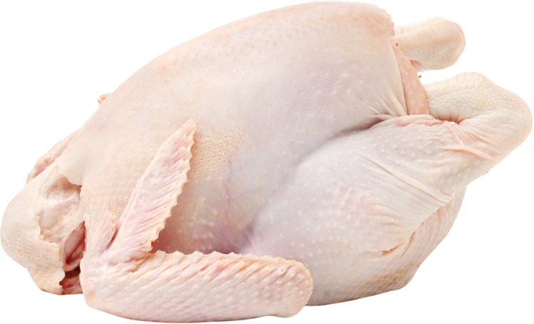

Peanut Satay Curry
This creamy, nutty, and aromatic peanut satay curry combines tender chicken with a rich coconut and peanut butter sauce, infused with fragrant spices. Serve it over jasmine rice or with warm flatbread to soak up the delicious sauce.

1 lb chicken
½ cup peanut butter
1 can (13.5 oz) coconut milk
1 tbsp soy sauce
1 tbsp Thai red curry paste

2 cloves garlic
1 tsp ginger
1 tbsp lime juice

- Heat oil in a pan over medium heat.
- Add garlic and ginger, sauté until fragrant (about 30 seconds).
- Stir in Thai red curry paste and cook for another minute.
- Add the chicken and cook until lightly browned.
- Pour in coconut milk, peanut butter, and soy sauce. Stir until smooth.
- Simmer for 10-15 minutes until the sauce thickens and the chicken is fully cooked.
- Stir in lime juice, then remove from heat.
- Serve hot with jasmine rice or flatbread.